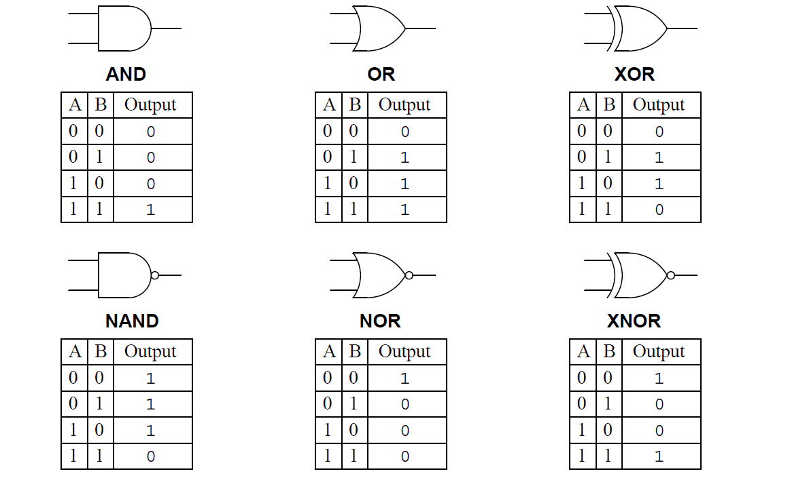
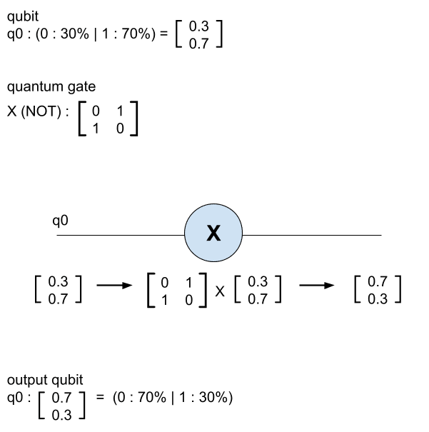

Quantum gates
Now that we have seen what a qubit is, how can we manipulate them?
For bits we use “logic gates”. These allow the creation of algorithms to perform calculations:
{kind=link}
We observe on the previous picture that there are several gates giving an output result depending on the inputs.
In the same way, there are "quantum gates" to manipulate qubits.
Quantum gates, however, behave differently than logic gates.
Important
As we have seen, qubits can be represented by a “state vector” [x, y] where “x” is the probability of having 0 and “y” having 1.
Modifying this state vector is modifying the qubit.
Then we can easily modify a qubit by multiplying the state vector with a matrix. This is how quantum gates work.
Manipulation of quantum gates
Example of the NOT gate:
{kind=link}
We observe here that the NOT gate is a matrix, when it's applied to the qubit, it inverts the state vector and then inverts the probability between the 0 and 1 state of the qubit.
There are several quantum gates to modify qubits. To find out which ones we have implemented in Quantum Nodes, you can find them in the list of nodes “Quantum Gates”.
To properly manipulate qubits with these gates, we use "quantum circuits".